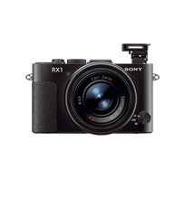

What's Hot
Time to Watch.
The best movie watching experience.
View All Items
Most Popular
black
Cyber-shot Digital Camera W610
Starting at
$109.99
MSRP

black
Cyber-shot RX1
Starting at
$2799.99
MSRP
black
Cyber-shot Digital Camera HX30
Starting at
$369.99
MSRP